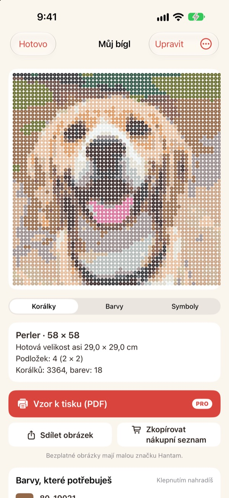
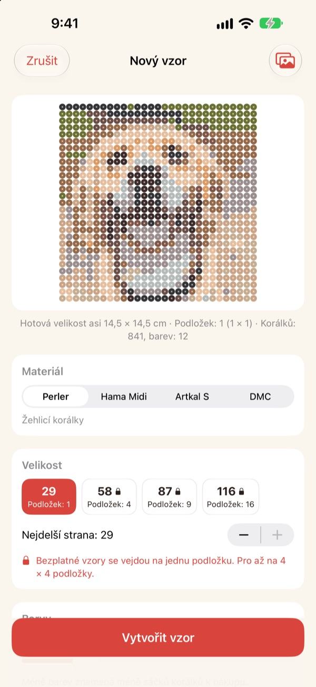
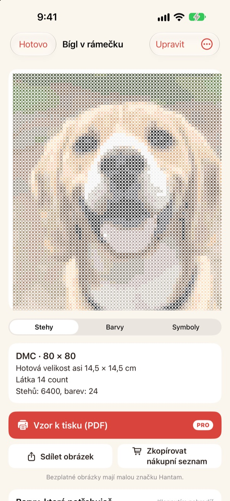
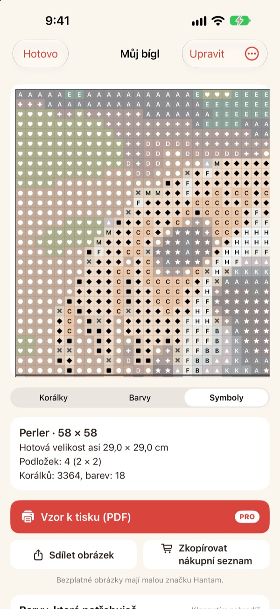
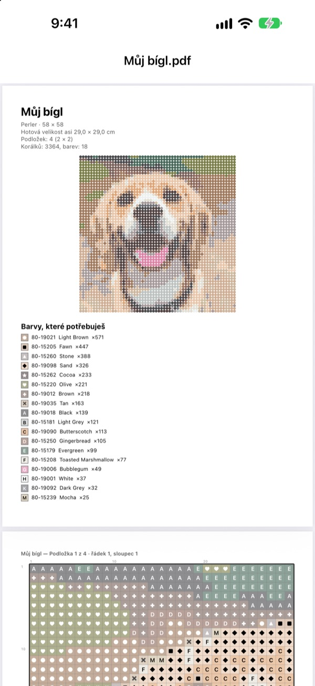

Z jedné fotky
je vzor
Vyber fotku svého mazlíčka, sebe nebo oblíbené postavičky. Hantam z ní udělá vzor na žehlicí korálky nebo křížkový steh v barvách, které si můžeš koupit.
Vzory na jednu podložku jsou zdarma. Fotky z iPhonu nikam neodcházejí.

Vyzkoušej to na fotce
Stejné přiřazování barev jako v aplikaci, se skutečným vzorníkem Perler. Změň velikost a počet barev, nebo zkus vlastní fotku.
Udělat vzor je snadné. Trefit skutečné barvy korálků už ne
Když fotku rozpixeluješ v jakémkoli editoru, vyjdou barvy, které nemá žádný korálek ani příze. Pak hádáš, ze které krabičky je které políčko, a počítáš, kolik čeho koupit. Hantam vybírá jen z barev, které se prodávají, a řekne ti přesně, kolik jich potřebuješ.
Skutečné barvy, skutečná čísla
Vyber korálky Perler, Hama Midi, Artkal S nebo přízi DMC. Každé políčko dostane barvu, kterou ta značka opravdu prodává, i s číslem.
Velikost a počet barev určíš sám. Velké vzory se dělí na podložky 29 × 29.

I na křížkový steh
Vyber přízi DMC a ze stejné fotky je vzor na křížkový steh. Zvol kanavu Aida 11, 14, 16 nebo 18 a Hantam ukáže hotovou velikost a počet stehů každé barvy.

Hned víš, co koupit
Přepni na vzor se symboly a postupuj políčko po políčku, s tlustou čárou na každém okraji podložky nebo po 10 stezích. Uvidíš, kolik korálků která barva potřebuje, a Zkopírovat nákupní seznam stačí jedním klepnutím.
Klepnutím na políčko ho změníš, nebo nahradíš jednu barvu jinou v celém vzoru.

Vytiskni a začni
S Pro vyexportuješ Vzor k tisku (PDF): nejdřív seznam barev, pak vzory se symboly po jednotlivých podložkách.

Ke vzoru ve třech krocích
- 1
Vyber fotku
Mazlíčci, obličeje, loga i postavičky. Nejlíp dopadnou fotky s jasným hlavním motivem.
- 2
Vyber korálky nebo přízi
Urči značku, velikost a počet barev.
- 3
Tvoř
Řiď se vzorem na displeji, nebo si ho s Pro vytiskni.
Materiály a velikosti
- Perler · Hama Midi · Artkal S
- Žehlicí korálky, podložky 29 × 29, korálek asi 5 mm
- DMC
- Příze na křížkový steh, kanava Aida 11, 14, 16 nebo 18
- Zdarma
- Korálky do 1 podložky (29 políček), příze do 40 stehů na delší straně
- Pro
- Korálky do 4 × 4 podložek (116 políček), příze do 200 stehů
- Barvy
- 2 až 50 v jednom vzoru
Perler, Hama, Artkal a DMC jsou ochranné známky svých vlastníků. Hantam s nimi není nijak spojen. Barvy na displeji se mohou od skutečnosti mírně lišit.
Začni zdarma. Na velké vzory a tisk je Pro.
Zdarma
- Vzory do jedné podložky nebo 40 stehů
- Všechny značky: Perler, Hama, Artkal a DMC
- Počty podle barev, nákupní seznam a výměna barev
- Až 3 uložené vzory
- Sdílení obrázků s malou značkou Hantam
Hantam Pro
- Vzory v PDF k tisku
- Až 4 × 4 podložky nebo 200 stehů
- Neomezeně uložených vzorů
- Obrázky bez značky
- Všechny nástroje pro pixel art
Měsíční nebo roční předplatné, nebo jednorázový doživotní nákup
Pro můžeš v aplikaci i darovat kamarádovi.
Časté otázky
Nahrávají se moje fotky někam?
Ne. Fotky i vzory se zpracovávají a ukládají jen v tvém iPhonu.
Barvy vypadají trochu jinak než moje korálky.
Displej zobrazuje barvy jinak než plast a příze. Klepni na barvu v seznamu a vyměň ji za bližší odstín stejné značky.
Jak velký může vzor být?
Zdarma jedna podložka 29 × 29 nebo 40 stehů na delší straně. S Pro až 4 × 4 podložky (116 korálků) nebo 200 stehů.
Které fotky dopadnou nejlíp?
S jedním hlavním motivem a jednoduchým pozadím. Čím méně barev, tím čistší vzor, takže když výsledek působí neklidně, sniž počet barev.
Dá se pořád dělat pixel art?
Ano. Pixelizace fotek, kreslení podle 110 předloh i animace snímek po snímku zůstaly. Všechny nástroje pro pixel art jsou v Pro.
Jak obnovím nákup?
Otevři v aplikaci nastavení a klepni na Obnovit nákupy. Použij stejný Apple účet, kterým jsi Pro koupil.
Jak zruším předplatné?
V Nastavení iPhonu › tvoje jméno › Předplatné vyber Hantam. Doživotní přístup je jednorázová platba a neobnovuje se.
Jak nahlásit chybu nebo navrhnout nápad?
Nejrychlejší je poslat zpětnou vazbu z nastavení aplikace. Můžeš také napsat na adresu níže nebo poslat DM na Instagramu (@lee25_ios).
Dotazy, chyby i nápady posílej na leeo@kakao.com.